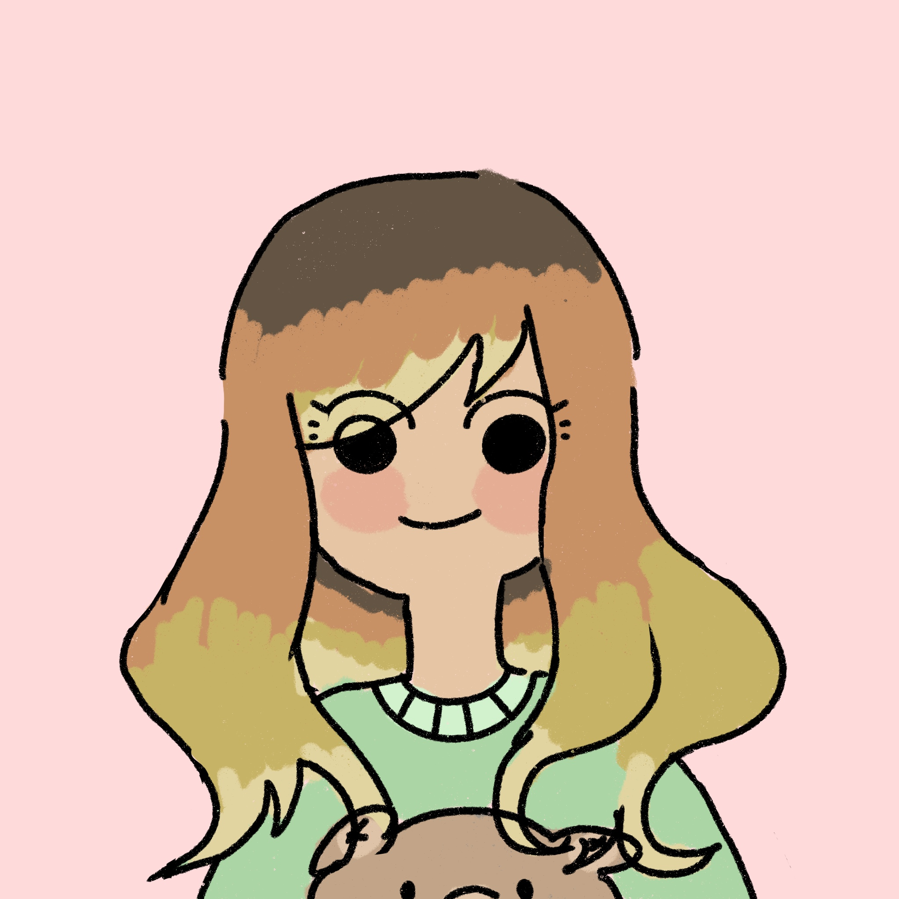

Mi experiencia al ganar un concurso Anáhuac.
18 MAYO 2022
 POR XIMENA HERNÁNDEZ
Era Octubre del 2020, cuando llegó un mensaje a mi celular. Era mi coordinadora, animándonos a todos a participar en un concurso, el premio al ganador era una “laptop” y el tema del concurso era realizar un mascota para el parque de diversiones llamado “El Dorado Park”.
Al principio no sabía si participar o no, estábamos a 3 semanas de parciales y no quería “estresarme” con algo más, pero luego me pregunté... ¿Por qué no? Mi vida estudiantil no duraría mucho más y no siempre se presentan este tipo de oportunidades. Así que me aventé a ello.
Pero...¿Cómo diseñaría un personaje en 5 días? Era mi 4to semestre y no sabía nada de diseño de personajes, por lo que empecé por lo más básico, investigar.
Investigué sobre el lugar y donde se ubicaba, este se encontraba en Veracruz y fue creado por Chedraui en una de sus plazas comerciales. Solamente sabía sobre eso y la idea de que lo más viable para realizar mi personaje era basarme en los personajes que había en el mercado. Estos eran los de los cereales, las universidades y los comercios, los cuales, curiosamente eran todos animales, algunos con más aspecto humanoide que otros.
Ya era algo, ya sabía quien era mi mercado y cómo empezaría mi propuesta. Encontré animales originarios de méxico y de veracruz y boceté al personaje solo con eso, hasta llegar a dos personajes, “Tlacuachin” y “Dora” que eran respectivamente un tlacuache y un cangrejo, además de mi justificación de por que se veían así y de dónde surgió mi idea. No pude pensar en nada más y no sabía siquiera si estaba bien así.
Enviado.
Ese fue mi primer avance del proyecto, pero la verdad no quería hacer esto sola por lo que me junté con mi amigo de la carrera, Brian. Quien al igual que yo, estaba participando en el proyecto y estaba igual de perdido que yo, por lo que nos juntamos para estar perdidos juntos.
Brian y yo juntamos nuestras ideas iniciales y las mezclamos en una sola, solidificando en un proyecto basado en animales dentro de una pandilla originaria de Veracruz. Que a todo esto, habían otras personas participando dentro de la Universidad pero ya fue en esta segunda entrega que casi todos desistieron hasta que Brian y yo éramos los únicos del campus en enviar una propuesta para el cliente.
Enviado el 30 de Octubre.
10 de noviembre de 2020, El director de la escuela de diseño manda mensaje, diciendo lo siguiente: “Les informo que la propuesta que se mandó para el concurso por parte de Brian y Ximena fue seleccionada como ganadora".
Ganadora... ¿Yo? ¿Por?
Estaba que no me la creía, pensando que era broma, hasta que toda la coordinación nos felicitó y nos mandó los siguientes pasos para seguir con nuestra propuesta. Casi que no hubo tiempo para celebrar porque teníamos trabajo que hacer, el cliente tenía unos cambios y los quería para ayer por lo que trabajamos muertos de suelo y bastante café en nuestras venas para poder terminar a tiempo.
Al final, el cliente nos dijo que nos llevaría a presentar nuestro personajes hasta Veracruz y en marzo del 2021 por fin se pudo, pero, fue aquí donde enfrentamos una nueva problemática. Presentar nuestro proyecto a un público real y explicarles cómo nacieron estos personajes.
Obviamente, Brian y yo no sabíamos que decir, estos personajes salieron de nuestro pánico y las dos neuronas que teníamos al momento, pero, al final se logró. Ensayamos lo que teníamos que decir y no fallamos al momento, por lo que salió todo bien. Fue una muy buena experiencia, llegué a conocer otro estado que no conocía y disfrutar unas mini vacaciones en el proceso.
Y ahora... lo único que nos faltaba era nuestra “laptop”. Que como buenas personas ansiosas, pensamos que si nos daban una laptop para los dos la venderíamos y repartiremos en mitades iguales, ya que en ningún momento supimos si solo nos darían una o dos y es que en el concurso no establecía de cuantas personas podía ser el proyecto por lo que los clientes no se esperaban que fuéramos dos alumnos.
Y... nos dieron dos tablets Apple. Al principio si estaba un poco decepcionada por que según yo, me había ganado una nueva laptop y podía poner a descansar la mía y no, una tablet nueva que bueno, ya tenía una tableta gráfica en casa así que no le veía mucho uso al principio. Aún así la aceptamos con gusto y nos la entregaron junto con un poco del merchandising de los mascotas.
Al final, no era lo que esperaba, pero la experiencia, el viaje y la convivencia fueron un gran aprendizaje, el cual, si en algún momento se les presenta la oportunidad de concursar en algo, por pequeño que sea, háganlo, no se pierden nada con intentar.
Espero les haya gustado mi pequeño relato. Si gustan seguir las redes de el parque es @doradoparkmx y mis redes @artistaeh_twt.
Gracias por leerme, los veo en el siguiente artículo.
TE PUEDE INTERESAR

RECOMENDACIÓN
Mi experiencia en Blender.

RECOMENDACIÓN
Cosas que nadie me dijo antes de entrar a la Universidad.

ARTÍCULO
Cuentas de Redes Sociales que te recomiendo.
Comentarios
UNETE A LA CONVERSACIÓN
Me parece muy interesante tu evolución con Blender, es sorprendente como en tan poco tiempo se puede mejorar a hacer cosas como las que haces, aunque se vea muy difícil al principio...